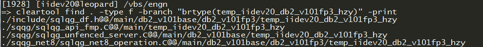
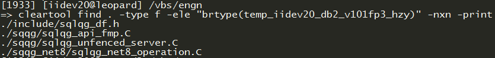

IBM Rational ClearCase cleartool¶
0. Legend¶
- [...] :: a file/element/path that is to be provided by user and is required
I. Useful commands¶
list all the checkout files
lsco
To modify an element you need to check it out [1]
cleartool co [anelement]
checkout all files within a directory [2]
cd [targetDir] cleartool co *
figure out a certain file version number
cleartool ls [myFile]
Example
=> ct ls db2fedsvrcfg.C
db2fedsvrcfg.C@@/main/temp_iidev20_db2_v101fp5_hive_zy/2 Rule: .../temp_iidev20_db2_v101fp5_hive_zy/LATEST
compare a version with its predecessor [3]
cleartool diff -pred [path]
roll back a file checked in to clearcase [4]
cd [filedirectory] cleartool lsvtree [myFile] cleartool co -nc [myFile] cp myFile@@/main/xx [myFile] cleartool ci -nc [myFile] with xx being the version number you want to restore
check all the files modified in particular branch (i.e temp_iidev20_db2_v101fp3_hzy) [5]
- 7.1
- 
cleartool find . -type f -branch "brtype(temp_iidev20_db2_v101fp3_hzy)" -print
7.2
cleartool find . -type f -ele "brtype(temp_iidev20_db2_v101fp3_hzy)" -nxn -print7.3
$ cleartool find -avobs -branch "brtype(temp_iidev20_bigsql_main_hzy)" -type fd -exec 'cleartool desc -short $CLEARCASE_XPN/LATEST' /vbs/engn/sqqg_odbc@@/main/temp_iidev20_bigsql_main_hzy/1 /vbs/engn/sqqg_odbc/db2fedsvrcfg/db2fedsvrcfg.C@@/main/temp_iidev20_bigsql_main_hzy/5 /vbs/engn/sqqg_odbc/db2fedsvrcfg/db2odbct.C@@/main/temp_iidev20_bigsql_main_hzy/3 /vbs/engn/sqqg_odbc/db2fedsvrcfg/db2odbct2.C@@/main/temp_iidev20_bigsql_main_hzy/2 /vbs/engn/sqqg_odbc/db2fedsvrcfg/db2odbct_analyze.C@@/main/temp_iidev20_bigsql_main_hzy/9 /vbs/engn/sqqg_odbc/db2fedsvrcfg/db2odbct_connection.C@@/main/temp_iidev20_bigsql_main_hzy/0 /vbs/engn/sqqg_odbc/db2fedsvrcfg/db2odbct_operation.C@@/main/temp_iidev20_bigsql_main_hzy/0 /vbs/engn/sqqg_odbc/db2fedsvrcfg/db2odbct_statement.C@@/main/temp_iidev20_bigsql_main_hzy/12 /vbs/engn/sqqg_odbc/db2fedsvrcfg/db2odbct_string.C@@/main/temp_iidev20_bigsql_main_hzy/1 /vbs/engn/sqqg_odbc/db2fedsvrcfg/inc/db2odbct.h@@/main/temp_iidev20_bigsql_main_hzy/1 /vbs/engn/sqqg_odbc/db2fedsvrcfg/inc/db2odbct2.h@@/main/temp_iidev20_bigsql_main_hzy/1 /vbs/engn/sqqg_odbc/db2fedsvrcfg/inc/db2odbct_analyze.h@@/main/temp_iidev20_bigsql_main_hzy/1 /vbs/engn/sqqg_odbc/db2fedsvrcfg/inc/db2odbct_common.h@@/main/temp_iidev20_bigsql_main_hzy/10 /vbs/engn/sqqg_odbc/db2fedsvrcfg/inc/db2odbct_driver.h@@/main/temp_iidev20_bigsql_main_hzy/1 /vbs/engn/sqqg_odbc/db2fedsvrcfg/inc/db2odbct_statement.h@@/main/temp_iidev20_bigsql_main_hzy/8 /vbs/engn/sqqg_odbc/sqlqg_hive_attributes.C@@/main/temp_iidev20_bigsql_main_hzy/2 /vbs/bin/macros/macros_misc.pl@@/main/temp_iidev20_bigsql_main_hzy/1
cancel a checkout
cleartool unco [myFile]
add new file to view
cp the file into the view
cleartool mkelem -nc -ci -mkpath [myFile]
Check in multiple files
ct ci -nc `lsco`